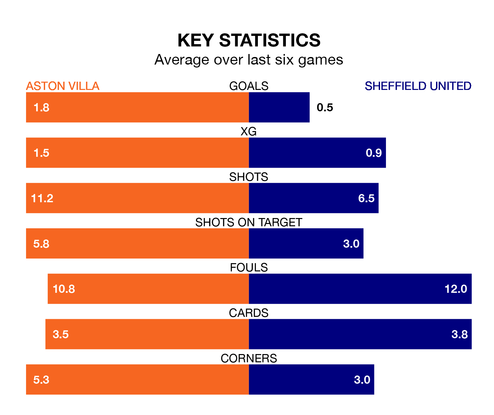

Mid-season relegation candidates Sheffield United face a challenge away against high-flying Aston Villa at Villa Park on Friday.
Sheffield United are rooted to the bottom of the Premier League table, and have picked up two wins and two draws in their 17 games to date.
The Villa, meanwhile, are third in the standings with 38 points, having won 12 and drawn two, and are one point behind table-toppers Arsenal.
With 12 goals in 17 games so far this season, United are the league's lowest scorers with 0.7 goals per game. And they are conceding more than average, letting in 43 goals at a rate of 2.5 per game.
Villa, meanwhile, are above average scorers, with 2.2 goals per game, compared to a league average of 1.5. They have conceded 1.2 goals per game.
The Villa are in fantastic form in the Premier League, with five wins and a draw from their last six games.
With a win and a draw over that period, the Blades' form is much worse – they have taken four points from 18, compared to the home side's 16.
In Ollie Watkins, Villa have one of the league's most on-form strikers so far this season. He has notched nine goals in 17 appearances, to sit fifth in the scoring charts.
The visitors' top scorers, with two goals each, are Oliver McBurnie and Gustavo Hamer.
In the last five years, Villa and United have played each other on five occasions. Villa won one of them, United two, and they drew twice.
On average, the Villa scored 0.8 goals and the Blades 1.2 in those matches.
Their last meeting was on March 3 2021, when United won 1-0 at home.
Villa's last match was on Sunday, a 2-1 win against Brentford, with Watkins and Álex Moreno getting the goals for the Villa.
United lost 2-0 against Chelsea last time out, on Saturday.
Friday's match will be refereed by Anthony Taylor, who has taken charge of 13 Premier League games so far this season, issuing two red cards and booking 62 players. He has awarded seven penalties.
The last Villa game Taylor refereed was a 4-0 home win against Everton on August 20. He is yet to oversee a match featuring United this season.
Updated: 12:43, 20/12/23